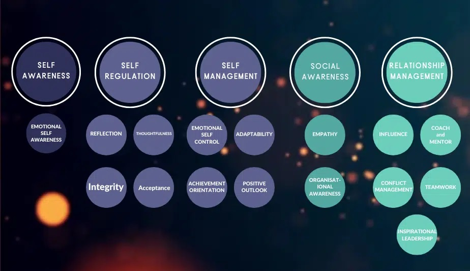
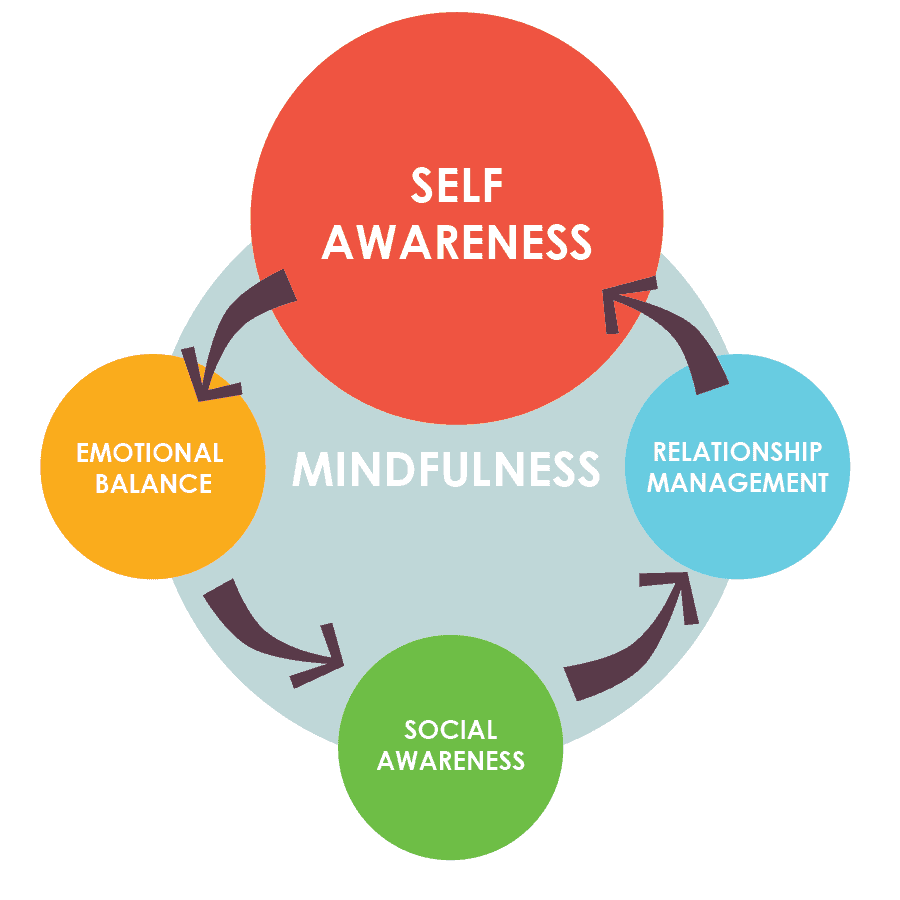

Emotional intelligence is commonly defined as the capacity to recognize, understand, use, and manage emotions.
The concept of 'emotional intelligence' first appeared in 1950's by A. Maslow, renowned American psychologist. The term itself was created in the 1964 research paper. In 1983 Howard Gardner presented the concept of multiple intelligences. In 1990 Peter Salovey and John Mayer expanded on the idea of emotional intelligence They claimed that feelings could help people to be more productive, whereas before it was accepted that emotions were in competition with thinking. Author and psychologist Daniel Goleman introduced and popularised the term to the general public.
Wiktionary defines EI as "The ability, capacity, or skill to perceive, assess, and manage the emotions of oneself, of others, and of groups." Wikitionary
In 1995 Goleman published 'Emotional Intelligence -Why it can matter more than IQ'. The book was on The New York Times Best Seller list for a year and a half. In the next 11 years he published 3 additional books : 'Working with Emotional Intelligence' in 1998, 'Primal Leadership: Unleashing the Power of Emotional Intelligence', with Richard Boyatzis and Annie McKee in 2001, 'Social Intelligence: Beyond IQ, Beyond Emotional Intelligence' in 2006.
Goleman popularized and changed a bit the idea of EI.
Five elements of EQ listed in Daniel Goleman's theory of emotional intelligence are:

1) Self-awareness - knowing one's feelings, strengths, weaknesses, goals, and values, and recognizing their interactions.
2) Self-regulation - controlling one's inappropriate emotions and thoughts,
3) Social skills - getting along with the other people,
4) Empathy - being aware and taking into account other people's emotions,
5) Motivation - knowing what motivates us, be self-motivated.
Goleman's work focuses on using EI in the business environment, e.g. for improving people's management and leadership, results, employees' satisfaction and company's culture. He claims that EI can be improved and learnt.
Developing EI can help us in our complicated, modern society.

We can cultivate our EI in 3 ways:
1) Practicing mindfulness - can help us to better understand, improves attention, increases empathy, be less reactive, and better in the world.
2) Self-knowledge and mastery - we become aware and regulate our thoughts and feelings.
3) Create Useful Mental habits to defend ourselves against negativity.
Increased EI leads to improved performance, better leadership, and happiness.
The 3 ways that we can practice the above are:
1) Being mindful - mindfulness is about focusing our attention, being non-judgemental and aware of our feelings and thoughts. We accept things as they are.
2) Being conscious listener - being focused on someone's talk. In this way we better understand others ideas, and the other person feels better.
3) Journaling - writting down our brain dump, our feelongs and thoughts. In this way we disolve and remove stucked emotions and thoughts and make ourselves feel better.
EI is important for good communication. Experts believe that it is more important for thesuccess in life than IQ. Understanding feelings is the key to better relationships, improving health, and better communication.